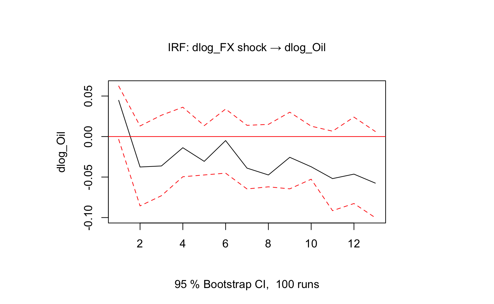

India has consistently ranked among the top three global crude oil importers. There’s no question that the country has long relied on imported oil to fuel its growth. This makes it obvious why Brent oil prices have consistently been a pressure point for India’s currency.
In early 2022, when Brent crude surged past $120 per barrel due to the Russia-Ukraine conflict, India’s oil import costs soared. The rupee reacted sharply, weakening from ₹74 to ₹83 per dollar over the year. This episode laid bare the rupee’s vulnerability to global oil shocks, when oil gets expensive, so does India’s dollar bill.
While it's well understood that rising Brent prices often cause the rupee to weaken, I flipped the question:
What happens to Brent when the INR suddenly depreciates?
Before diving into the answer, a quick note for those unfamiliar with SVARs: A Structural Vector Autoregression (SVAR) model is a type of econometric tool used to uncover causal relationships and analyze how specific economic shocks affect different variables over time.
Using an SVAR model, I treated Brent crude oil prices as exogenous in the short run, which aligns with how global commodity prices are typically determined. I then examined how a shock to the INR/USD exchange rate affects oil prices.
Interestingly, the model suggests a small, short-term decline in Brent prices following a rupee depreciation. At first glance, this might seem counterintuitive. After all, we usually think of rising oil prices causing a weaker rupee, not the reverse. But there are some plausible explanations:
Either way, it reinforces the idea that the relationship between currencies and commodities is rarely one-directional, there’s often feedback going both ways.
As India continues to rely heavily on oil imports, the relationship between Brent crude prices and the rupee will remain a key macroeconomic risk. While most headlines focus on how oil shocks weaken the rupee, this analysis shows that currency shocks can also reverberate back into global commodity prices at least in the short run.
The takeaway? Economic relationships are rarely one-way streets. Tools like SVAR help us untangle these interactions and highlight just how tightly connected global markets really are. For India, navigating the Brent-INR dynamic will always be part of the larger challenge of managing inflation, external stability, and sustainable growth.